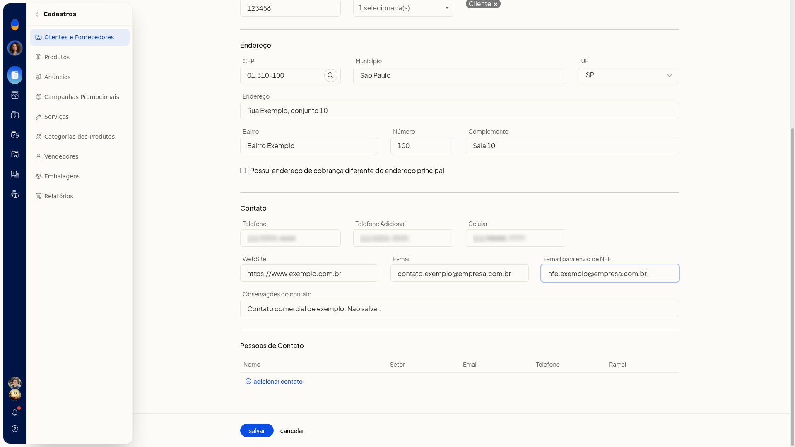
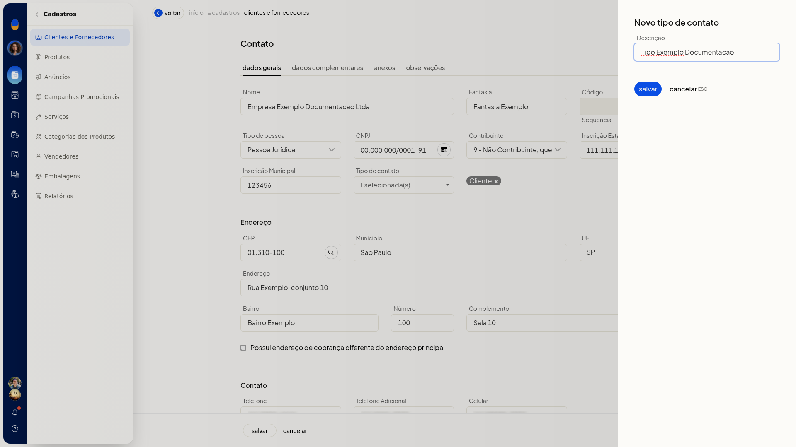
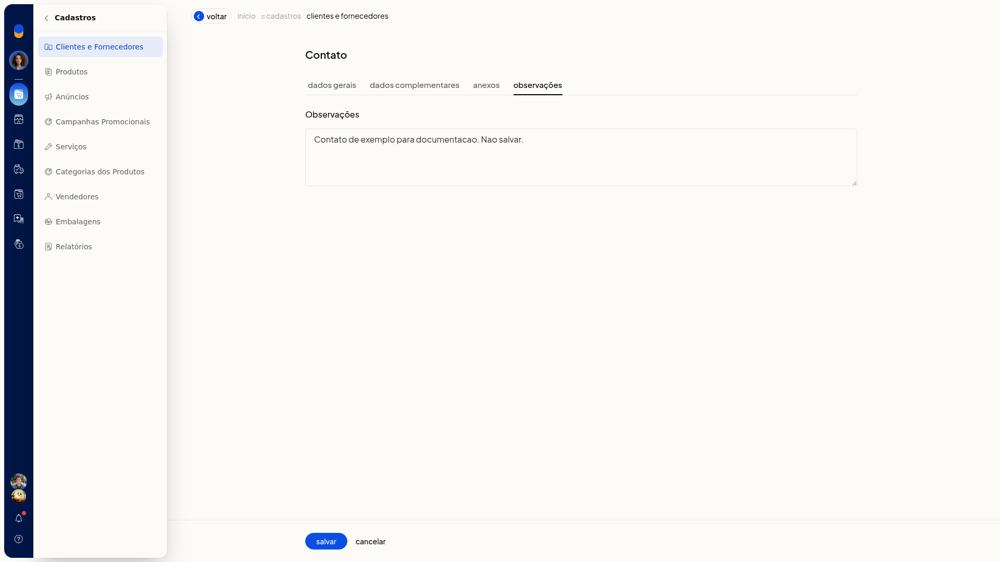

Clientes, fornecedores e transportadoras
No ERP da Olist, Clientes e Fornecedores reúne as pessoas e empresas com as quais a loja se relaciona. Você consulta, inclui e importa contatos nos perfis cliente, fornecedor, transportador e outros.
O cadastro pode ser feito pela tela, por planilha ou recebendo clientes de uma integração Bling ERP.
Pré-requisitos
- Para importar por planilha, tenha um arquivo Excel ou CSV de até 2 Mb no layout da planilha de exemplo do Importador de contatos.
- Para receber clientes do ecommerce, a integração precisa aparecer no seletor Plataforma.
Importante
- Na planilha, ID ou CPF/CNPJ atualizam um contato já existente.
- A importação de clientes da conta Bling ERP pode demorar.
- Tipos personalizados, criados em Tipos de contato, passam a aparecer nas abas da lista.
Instruções
Pela tela
-
Acesse Cadastros > Clientes e Fornecedores.

-
Clique em incluir cadastro.
-
Preencha as seções Dados Gerais, tipos de contato, Dados Complementares, Anexos e Observações. Em tipos de contato, você pode abrir Novo tipo de contato.



-
Clique em salvar para gravar o contato. Cancelar fecha o formulário e volta à lista sem incluir o contato.
Por planilha
-
Em Clientes e Fornecedores, clique em Mais ações.

-
Clique em importar clientes e fornecedores de uma planilha.

-
Baixe a planilha de exemplo e preencha o arquivo no layout Olist.
-
Use as colunas do exemplo:
-
ID
-
Código
-
Nome
-
Fantasia
-
Endereço
-
Número
-
Complemento
-
Bairro
-
CEP
-
Cidade
-
Estado
-
Observações do contato
-
Fone
-
Fax
-
Celular
-
E-mail
-
Web Site
-
Tipo pessoa
-
CNPJ / CPF
-
IE / RG
-
IE isento
-
Situação
-
Observações
-
Estado civil
-
Profissão
-
Sexo
-
Data nascimento
-
Naturalidade
-
Nome pai
-
CPF pai
-
Nome mãe
-
CPF mãe
-
Lista de Preço
-
Vendedor
-
E-mail para envio de NFe
-
Tipos de Contatos
-
Contribuinte
-
Código de regime tributário
-
Limite de crédito

- Em Tipos de Contatos, separe os rótulos por barra vertical.
- Clique em carregar planilha de contatos para efetivar a importação. Com ID ou CPF/CNPJ de um contato já existente, o ERP atualiza esse contato.
Receber clientes do Bling ERP
-
Em Clientes e Fornecedores, clique em Mais ações.
-
Clique em receber clientes do Bling ERP.
-
Em Plataforma, selecione Bling ERP. Leia o aviso Atenção: a importação de clientes da sua conta Bling ERP pode demorar.

-
Clique em importar clientes para iniciar a importação. fechar dispensa o painel sem importar.
Resultado
A lista de Clientes e Fornecedores exibe a pesquisa, os filtros, as abas com totais e as colunas Nome, CPF/CNPJ e Cidade.
Informações adicionais
Consulta na lista
Pesquise por nome, código, fantasia, email ou CPF/CNPJ. Filtre por data do cadastro, nome, situação e filtros. As abas separam Todos, Cliente, Fornecedor, Vendedor, Transportador, Agricultor, Funcionário e Outro.
Outras ações em Mais ações
No mesmo menu há imprimir, imprimir cadastros agrupados, listar aniversariantes, exportar clientes e fornecedores para planilha, exportar contatos e importar contatos de uma planilha.